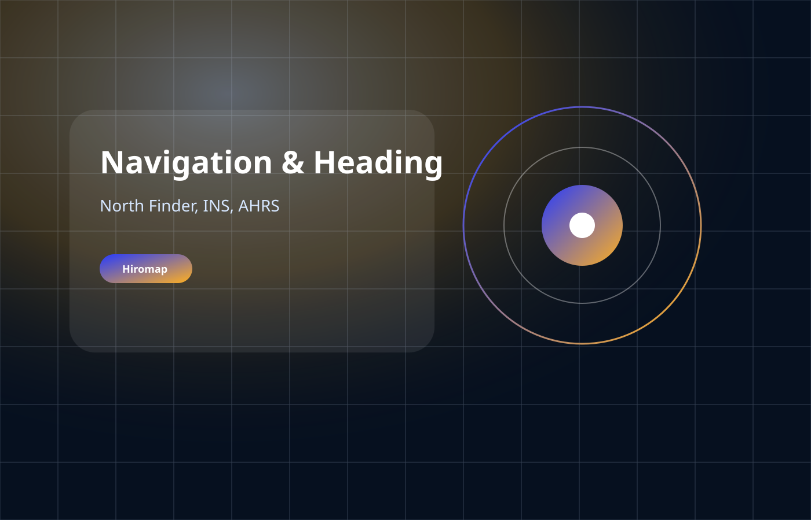

درباره هیرو نگار
شرکت دانشبنیان فعال در حوزه GNSS، RTK و PNT
هیرو نگار پارس با تمرکز بر طراحی، تولید و ارائه راهکارهای تعیین موقعیت ماهوارهای، گیرندههای نقشهبرداری، ایستگاه مرجع، سنسورها، سامانههای جهتیابی و زمان دقیق را برای پروژههای صنعتی، زیرساختی و سازمانی ارائه میکند.
RTKRover و Base
CORSایستگاه مرجع
PNTNavigation & Timing
CyberGNSSتابآوری سیگنال
محصولات
سبد محصولات هیرو نگار

Navigation & Heading
Navigation & Heading
سامانههای شمالیابی، Heading و ناوبری اینرسی برای کاربردهای ثابت و متحرک.
مشاهده دسته
Timing
Timing
سامانههای زمان دقیق، GNSS Time Server، White Rabbit و زمان مقاوم در برابر اختلال.
مشاهده دسته
Resilient GNSS
Resilient GNSS
راهکارهای تابآوری GNSS شامل تشخیص اسپوفینگ، مقابله با جمینگ و شمالیاب FOG.
مشاهده دسته
راهکارها
راهکارهای عملیاتی برای پروژههای واقعی
راهکار RTK و CORS
طراحی و راهاندازی ایستگاه مرجع، شبکه تصحیحات و مدیریت کاربران RTK برای سازمانها و پروژههای بزرگ.
مشاهده راهکارراهکار معدن و ماشینآلات
موقعیتیابی دقیق، ردیابی، هشدار خروج از مسیر، LPS تونلی و کمک عملیاتی ماشینآلات در معدن.
مشاهده راهکارکشاورزی دقیق
موقعیتیابی سانتیمتری، هدایت ماشینآلات، برداشت مرز زمین و مدیریت عملیات کشاورزی دقیق.
مشاهده راهکارهمگامسازی زمان
تایمسرور GNSS، NTP/PTP، White Rabbit و معماری زمان دقیق برای شبکهها و زیرساختهای حساس.
مشاهده راهکارتابآوری و امنیت GNSS
پایش اسپوفینگ، مقابله با جمینگ و طراحی معماری PNT مقاوم برای کاربردهای حساس.
مشاهده راهکارمزیت رقابتی
از فروش تجهیز تا طراحی سامانه قابل اتکا
هیرو نگار فقط تأمینکننده محصول نیست؛ تیم فنی، تولید و پشتیبانی شرکت، نیاز پروژه را تحلیل میکند، معماری مناسب را پیشنهاد میدهد و در نصب، تست، آموزش و بهرهبرداری همراه پروژه میماند.
مجله هیرو
آموزش و تحلیل تخصصی GNSS و PNT
نحوه کار با GPS در نقشهبرداری
راهنمای عملی استفاده از GPS و GNSS در عملیات نقشهبرداری و برداشت میدانی.
مطالعه مقالهتوپوگرافی در Revit، SketchUp و Google Earth
مروری بر کاربرد دادههای توپوگرافی در نرمافزارهای طراحی و مدلسازی.
مطالعه مقالهروشهای تعیین موقعیت
آشنایی با روشهای مختلف تعیین موقعیت از GNSS تا RTK، PPP و راهکارهای محلی.
مطالعه مقالهمشاوره و خرید
برای انتخاب محصول یا طراحی سامانه با تیم فنی تماس بگیرید
تلفن: 021-88359714 | ایمیل: info@hiromap.com